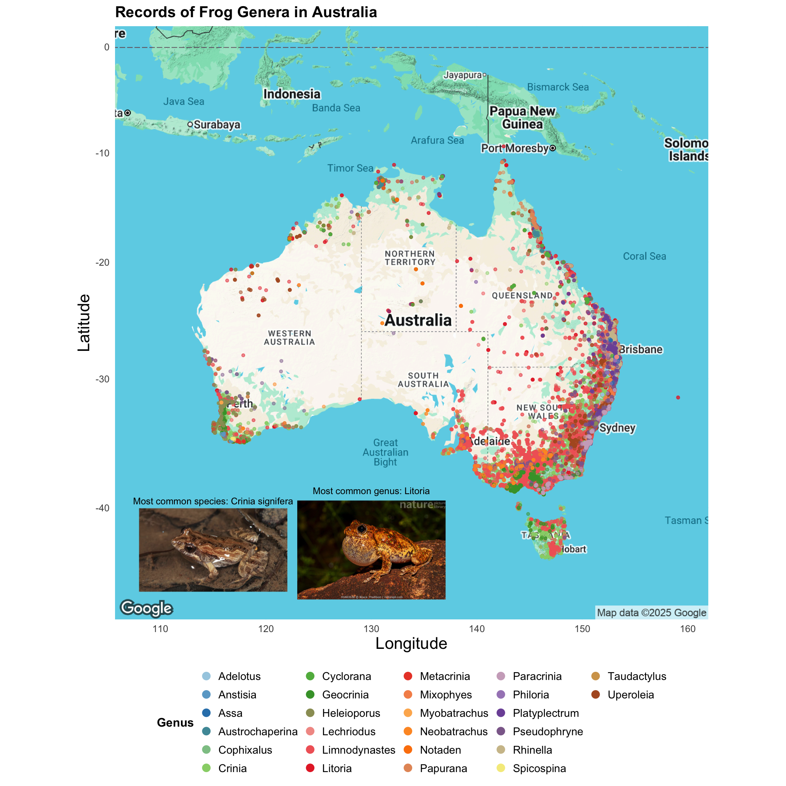

here() starts at /Users/samantharickle/Desktop/R Stuff/Rickle
library(ggmap)
Loading required package: ggplot2
ℹ Google's Terms of Service: <https://mapsplatform.google.com>
Stadia Maps' Terms of Service: <https://stadiamaps.com/terms-of-service>
OpenStreetMap's Tile Usage Policy: <https://operations.osmfoundation.org/policies/tiles>
ℹ Please cite ggmap if you use it! Use `citation("ggmap")` for details.
Attaching package: 'dplyr'
The following objects are masked from 'package:stats':
filter, lag
The following objects are masked from 'package:base':
intersect, setdiff, setequal, union
library(colorspace)library(jpeg)library(ggimage)
Attaching package: 'ggimage'
The following object is masked from 'package:ggmap':
theme_nothing
tuesdata <- tidytuesdayR::tt_load('2025-09-02')
---- Compiling #TidyTuesday Information for 2025-09-02 ----
--- There are 2 files available ---
── Downloading files ───────────────────────────────────────────────────────────
1 of 2: "frogID_data.csv"
2 of 2: "frog_names.csv"
frogs <- tuesdata$frogID_data
## Downloading data and cleaningAustralia <-get_map("Australia", zoom =4, maptype ="terrain")
frogs <- frogs %>%separate(col = scientificName, ## splitting full name into genus and speciesinto =c("Genus", "Species"),sep =" ",remove =FALSE,extra ="merge")frogs <- frogs %>%group_by(Species)%>%mutate(n_points_sp =n()) %>%group_by(Genus) %>%mutate(n_points =n()) %>%## creating new column with count (n) of each genusarrange(n_points) %>%## arrange in order of nmutate(Genus =factor(Genus, levels =unique(Genus)))my_colors <-distinctColorPalette(26) ## creating 26 color custom palettemy_colors3 <-colorRampPalette(brewer.pal(12, "Paired"))(26) ## creating 26 color custom palettemy_colors4 <-qualitative_hcl(26, palette ="Set3")c_signifera <-readJPEG(here("Week_08", "Images","C.signifera.jpeg"))
There are too many categories in x axis, making the species name overlap and impossible to read.
Too much variation in y axis makes bars for uncommon species so small they disappear.
Misspellings
Overall boring
No frog pictures D:
Kermit is stressed
Here is an example of a GOOD plot
ggmap(Australia) +geom_image(data =data.frame(x =115, y =-43),aes(x = x, y = y, image =here("Week_08", "Images", "C.signifera.jpeg")),size =0.25 ) +geom_text(data =data.frame(x =115, y =-43+3.5), # slightly above the imageaes(x = x, y = y),label ="Most common species: Crinia signifera",color ="black",size =3 ) +geom_image(data =data.frame(x =130, y =-43),aes(x = x, y = y, image =here("Week_08", "Images", "L.peronii.jpg")),size =0.25 ) +geom_text(data =data.frame(x =130, y =-43+4.25), # slightly above the imageaes(x = x, y = y),label ="Most common genus: Litoria",color ="black",size =3 ) +geom_point(data = frogs %>%arrange(desc(n_points)), ## plotting frog data in reverse n order (less frequent on top)aes(x = decimalLongitude,y = decimalLatitude,color = Genus ## color of points according to genus (too many species) ),alpha =0.50, ## adjusting transparencysize =1## adjusting the size of the points ) +scale_color_manual(values = my_colors3) +## using special brewer palettetheme_minimal() +theme(legend.position ="bottom",legend.title =element_text(face ="bold"),legend.text =element_text(size =10),legend.key.size =unit(0.4, "cm"),legend.box ="horizontal",axis.title.x =element_text(size =15),axis.title.y =element_text(size =15),plot.title =element_text(size =14, face ="bold") ) +labs( ## adjusting labelsx ="Longitude",y ="Latitude",title ="Records of Frog Genera in Australia" ) +guides(color =guide_legend(override.aes =list(size =3, alpha =1)))

This is a good plot because
The data is grouped by genus instead of species.
Lat/long data of each frog is layered on top of the map of Australia.
The colors correspond to each genus.
Data is ordered to less common species are on top.